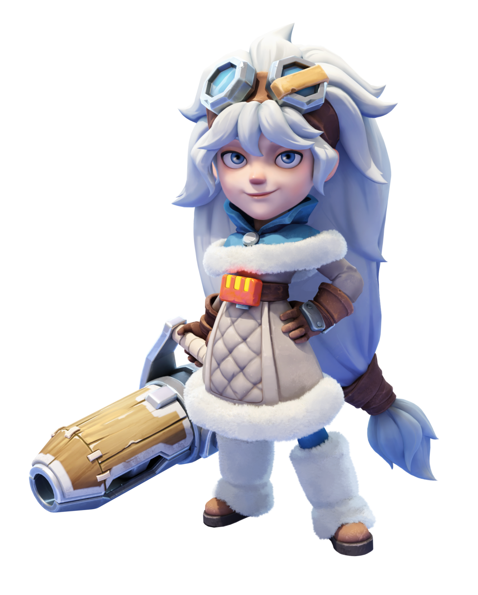
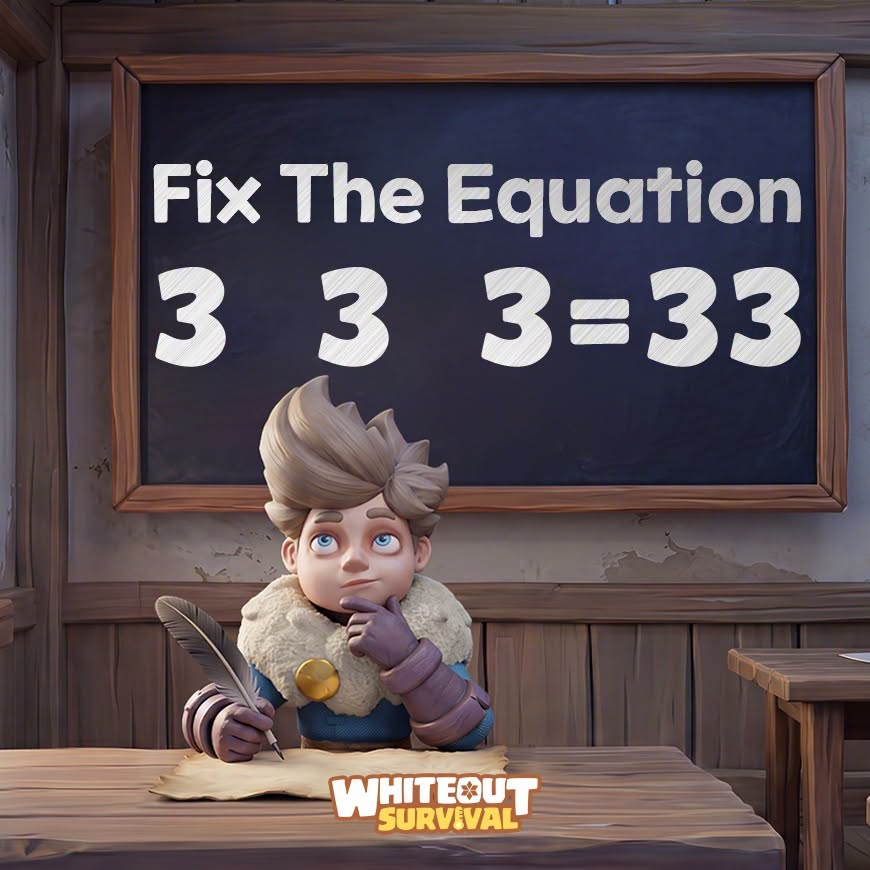
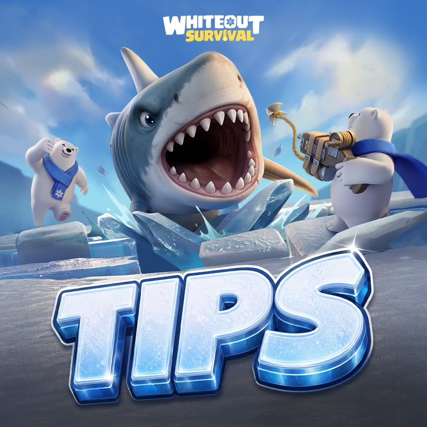
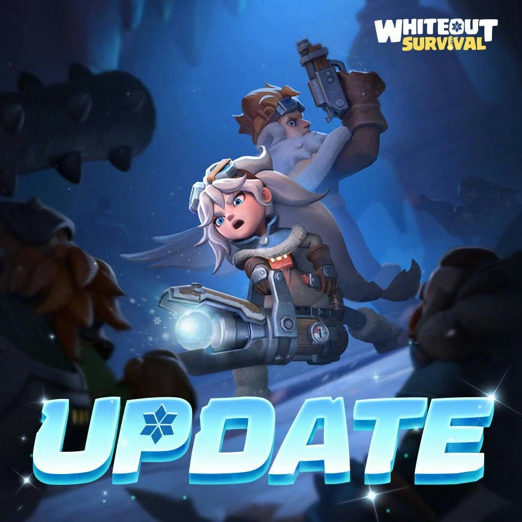

KIŞIN ORTASINDA, HAYATIN BAŞLANGICINDA.
BİR ATEŞ.
YENİ BİR
DÜNYA.
Soğuk her şeyi değiştirdi.
Şimdi her şeyi değiştirme sırası sende.
iOS / AndroidÜcretsiz strateji oyunu
Bir kıvılcımdan
koca bir dünyaya.
Sıcak bir yuva kur. Bilinmeyene doğru yola çık.
Bu dünyanın geleceğini sen şekillendir.
02 / ROTANI KENDİN ÇİZ
Bir sonraki
adımın ne?
Bu dünyada her karar yeni bir kapı açar.
Bir rota seç, seni neyin beklediğini keşfet.
Her büyük şehir,
küçük bir ateşle başlar.
Fırınını geliştir. Barınakları iyileştir. Odun, kömür ve yiyecek üretimini dengele. Halkın güvende olduğunda şehrin büyümeye hazırdır.

MOLLY / WHITEOUT SURVIVAL✳EKİBİNİ BİR ARAYA GETİR
Yanında
kim var?
Oyunun kahramanlarıyla tanış. Bir karakter seç, Whiteout Survival dünyasındaki ekibine ilk adımı at.
Molly
Molly ile buzlu dünyanın yeni yollarını keşfet. Kahramanlarını geliştir, ekibini kur ve macerana devam et.
DAHA YAKINDAN BAK
Bu dünya
seni bekliyor.
Şehirler, keşifler, kahramanlar ve ittifaklar.
Bir görsele dokun, tüm detayları keşfet.
Oyunun resmî tanıtım görselleri · Görseli büyütmek için seç.
05 / İLK GÜNÜN
Büyük hikâyeler.
Küçük başlangıçlar.
İlk kıvılcımdan ilk ittifaka.
Yeni dünyanda yolunu bulman için.
01Ateşi canlı tut.
+
Fırın şehrinin kalbidir. Geliştirmeye öncelik ver, sıcaklığı takip et ve halkının temel ihtiyaçlarını karşıla.
02Şehrine hayat ver.
+
Barınaklarını iyileştir; odun, kömür ve yiyecek üretimini dengede tut. Halkının sağlığı ve ihtiyaçları, büyümenin temelidir.
03Ekibini bir araya getir.
+
Kahramanlarının rollerini tanı. Piyade, mızrakçı ve nişancıları birlikte değerlendirerek dengeli bir birlik oluştur.
04Birlikte daha ileri git.
+
Aktif bir ittifaka katıl. İnşa yardımları ve ortak mücadelelerle geliş; yeni dostlarınla daha büyük hedeflere yürü.
Kamptan
haber var.
Resmî oyun sayfası ↗
Denklemi düzelt ↗
Whiteout Survival — Fix The Equation

Bir adım önde ol ↗
Whiteout Survival — Tips

Yenilikleri keşfet ↗
Whiteout Survival — Update
Century Games'in resmî oyun sayfasında listelenen duyurular. Güncel gelişmeler için oyun içi haberleri takip et.
Tek başına başla.
Birlikte devam et.
Dünyanın dört bir yanından oyuncularla buluş.
Haberleri takip et, deneyimlerini paylaş.
MACERAN ŞİMDİ BAŞLIYOR.
KIŞIN ÖTESİNDE
BİR DÜNYA VAR.
Yeni dünyada yerini al.
Whiteout Survival’ı ücretsiz indir.
iOS & Android · Uygulama içi satın alımlar içerir.